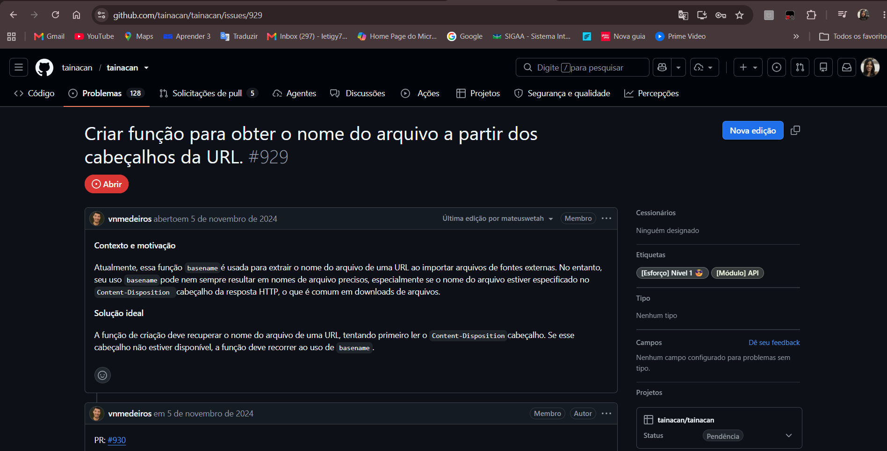
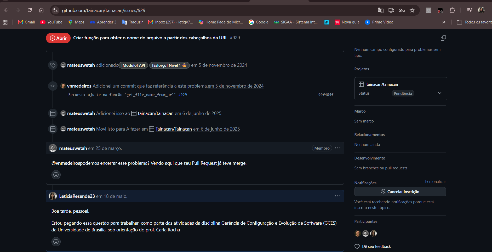
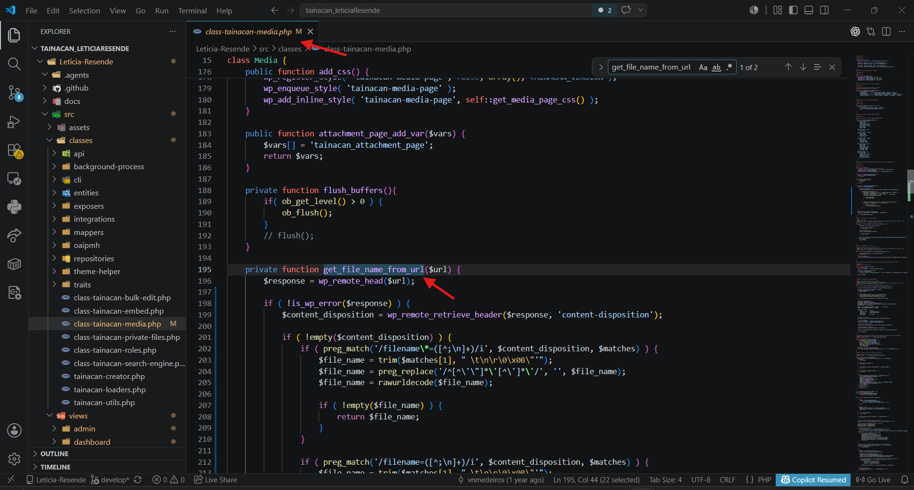
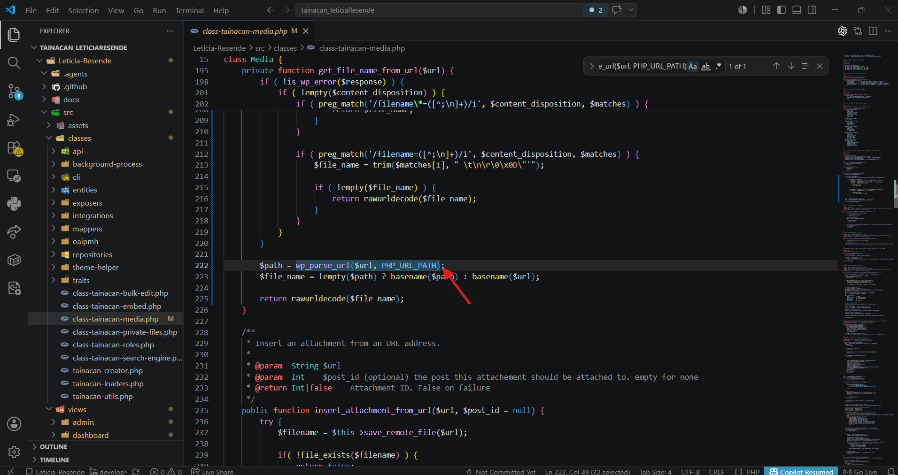
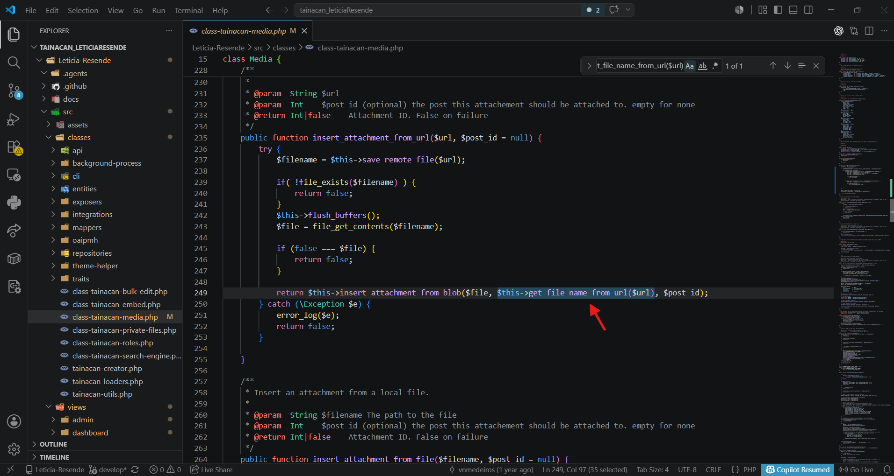
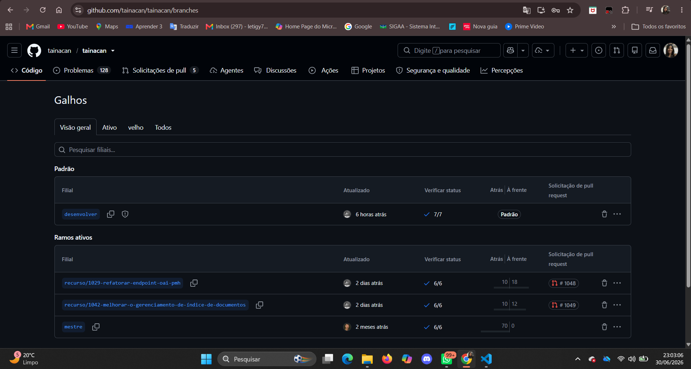

Diário de Bordo – Letícia Resende
Informações da Sprint
| Item | Descrição |
|---|---|
| Sprint | Sprint 5 |
| Data de Início | 10/06/2026 |
| Data de Término | 19/06/2026 |
| Responsável | Letícia Resende |
| Issue | #929 - Criar função para obter o nome do arquivo a partir dos cabeçalhos da URL |
| Repositório | Tainacan |
Objetivo da Sprint
O objetivo desta sprint foi implementar a Issue #929, relacionada ao módulo de API/mídia do Tainacan.
A issue tinha como proposta melhorar a forma como o Tainacan identifica o nome de arquivos importados a partir de URLs externas. Antes da alteração, o sistema dependia principalmente do uso de basename() para extrair o nome do arquivo diretamente da URL. Essa abordagem pode falhar quando a URL não contém o nome real do arquivo ou quando o arquivo é servido por uma rota de download com parâmetros.
A solução proposta foi ajustar a função responsável por obter o nome do arquivo para tentar primeiro ler o cabeçalho HTTP Content-Disposition, onde muitos servidores informam o nome real do arquivo. Caso esse cabeçalho não esteja disponível, a função deve continuar utilizando basename() como fallback.
Issue 929


Planejamento e Atividades da Sprint
Durante a sprint, foi feita a análise da issue, a localização da classe responsável pelo tratamento de arquivos de mídia e a implementação da melhoria na função get_file_name_from_url().
A alteração foi realizada no arquivo:
src/classes/class-tainacan-media.php
A função passou a utilizar wp_remote_head() para consultar os cabeçalhos da URL e wp_remote_retrieve_header() para recuperar o cabeçalho Content-Disposition. Também foi mantido o fallback com basename(), agora utilizando wp_parse_url() para extrair somente o caminho da URL antes de obter o nome do arquivo.
Por falta de permissão, não foi possível criar uma branch específica para a contribuição nem realizar um fork do repositório. Assim, a implementação foi feita localmente no projeto utilizado para a atividade.
Atividades Realizadas
| Atividade | Status |
|---|---|
| Leitura e interpretação da Issue #929 | Concluído |
Localização da função get_file_name_from_url() |
Concluído |
Análise do uso anterior de basename() |
Concluído |
Ajuste da função para consultar o cabeçalho Content-Disposition |
Concluído |
Suporte ao formato filename= no cabeçalho HTTP |
Concluído |
Suporte ao formato filename*= com nome codificado |
Concluído |
Manutenção do fallback com basename() |
Concluído |
Uso de wp_parse_url() para evitar query string no nome do arquivo |
Concluído |
Verificação do uso da função em insert_attachment_from_url() |
Concluído |
Validação do diff com git diff --check |
Concluído |
| Tentativa de criar branch ou fork para contribuição | Não concluído por falta de permissão |
Ferramentas e Tecnologias Utilizadas
| Ferramenta / Tecnologia | Finalidade |
|---|---|
| VS Code | Edição e busca visual dos arquivos do projeto |
| PHP | Linguagem principal da implementação |
| WordPress HTTP API | Uso de wp_remote_head() e wp_remote_retrieve_header() |
| Git | Verificação das alterações locais |
| GitHub Issues | Consulta da descrição e motivação da issue |
| PowerShell | Apoio para localizar arquivos e validar alterações |
Atividades Realizadas em Detalhes
1. Análise da issue
A Issue #929 descrevia um problema no uso de basename() para extrair nomes de arquivos a partir de URLs externas.
O problema acontece porque algumas URLs de download não possuem o nome real do arquivo no caminho. Em muitos casos, o nome correto vem no cabeçalho HTTP Content-Disposition, por exemplo:
Content-Disposition: attachment; filename="documento.pdf"
ou:
Content-Disposition: attachment; filename*=UTF-8''documento%20final.pdf
Por isso, a solução ideal era consultar esse cabeçalho antes de recorrer ao basename().
2. Localização da função responsável
Foi localizada a função:
get_file_name_from_url()
no arquivo:
src/classes/class-tainacan-media.php
Essa função já era utilizada no fluxo de importação de anexos por URL, especificamente em:
insert_attachment_from_url()
A chamada encontrada foi:
$this->get_file_name_from_url($url)
Isso confirmou que a melhoria seria aplicada no ponto correto do fluxo.
3. Implementação da melhoria
A função foi ajustada para:
- chamar
wp_remote_head($url); - recuperar o cabeçalho
content-disposition; - tentar extrair o nome pelo padrão
filename*=; - tentar extrair o nome pelo padrão
filename=; - decodificar nomes com
rawurldecode(); - manter o fallback com
basename(); - usar
wp_parse_url($url, PHP_URL_PATH)para evitar que parâmetros da URL virem parte do nome do arquivo.
Com isso, o Tainacan passa a identificar nomes de arquivos de forma mais precisa ao importar mídias de fontes externas.
4. Validação da alteração
A alteração foi revisada no VS Code e validada com git diff --check, que não apontou problemas no diff.
Não foi possível executar php -l, pois o comando php não estava disponível no PATH da máquina local.
Issue Resolvida
Função get_file_name_from_url() localizada em class-tainacan-media.php

Fallback com wp_parse_url() e basename()

Suporte aos formatos filename*= e filename=

Espaço para Print da Dificuldade com Branch/Fork
Por falta de permissão, não foi possível criar uma branch específica para subir a contribuição.
Falha ou impossibilidade de criar branch

Aprendizados e Dificuldades
Maiores Dificuldades
A principal dificuldade foi trabalhar sem conseguir concluir o fluxo completo de contribuição via GitHub. Por falta de permissão, não foi possível criar uma branch própria nem realizar o fork do repositório para abrir uma Pull Request.
Também houve dificuldade na validação local, pois o comando php não estava configurado no PATH da máquina, impossibilitando a execução de php -l para checagem de sintaxe.
Além disso, foi necessário localizar corretamente o arquivo responsável pela lógica da issue, já que ele não estava nas páginas administrativas em src/views, mas sim na camada de mídia em src/classes.
Aprendizados
Foi possível compreender melhor como o WordPress trabalha com requisições HTTP por meio da WordPress HTTP API, especialmente com as funções:
wp_remote_head()
wp_remote_retrieve_header()
Também foi possível entender a importância do cabeçalho Content-Disposition em downloads de arquivos. Ele permite que o servidor informe o nome real do arquivo, mesmo quando a URL não contém esse nome diretamente.
Outro aprendizado importante foi a necessidade de manter fallbacks seguros. Mesmo consultando o cabeçalho HTTP, a função ainda precisa recorrer ao basename() quando o cabeçalho não existe ou não informa um nome válido.
Próximos Passos
- Validar a funcionalidade em um ambiente WordPress com o plugin Tainacan ativo.
- Testar a importação de arquivo por URL com cabeçalho
Content-Disposition. - Testar também uma URL sem esse cabeçalho para confirmar o fallback com
basename(). - Quando houver permissão, criar uma branch específica e abrir uma Pull Request no repositório oficial.
Histórico de Versões
| Versão | Data | Descrição | Autor(es) |
|---|---|---|---|
| 1.0 | 26/06/2026 | Criação do Diário de Bordo da Sprint 5 referente à Issue #929 | Letícia Resende |